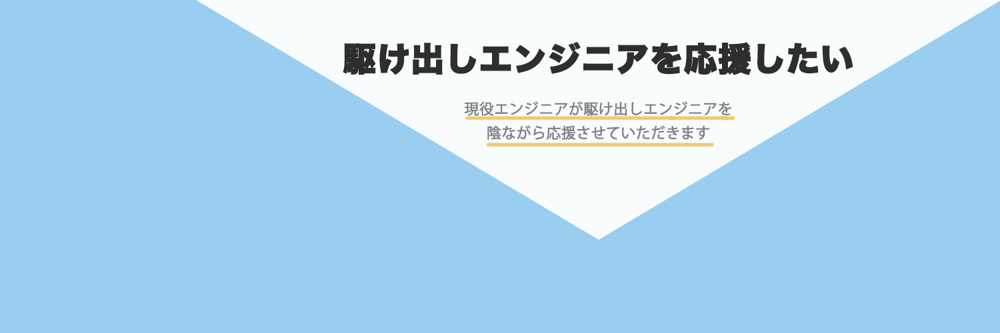

twitterヘッダー依頼  クライアント情報 年齢：20代 性別：男性 職業：エンジニア 希望イメージ 駆け出しエンジニアを応援するためのアカウントなので、 怪しいアカウントと思われないようにしたい。 好きなテーマやカラー 白、水色 使用したいキャッチコピー 親身に寄り添う系の言葉がいい デザインへの落とし込み クライアントの要望で怪しい”アカウントと思われたくない” ＝クリアな印象にしたいということで、希望の白と水色の テーマカラーをそのままデザインに使用。タイトルは分かり やすく『目的』を使用。サブタイトルは柔らかいブラウンの カラー、色鉛筆の優しいタッチで柔らかさを黄色で親しみや すい印象を加えました。
クライアント情報
年齢：20代 性別：男性 職業：エンジニア
希望イメージ
駆け出しエンジニアを応援するためのアカウントなので、
怪しいアカウントと思われないようにしたい。
好きなテーマやカラー
白、水色
使用したいキャッチコピー
親身に寄り添う系の言葉がいい
デザインへの落とし込み
クライアントの要望で怪しい”アカウントと思われたくない”
＝クリアな印象にしたいということで、希望の白と水色の
テーマカラーをそのままデザインに使用。タイトルは分かり
やすく『目的』を使用。サブタイトルは柔らかいブラウンの
カラー、色鉛筆の優しいタッチで柔らかさを黄色で親しみや
すい印象を加えました。